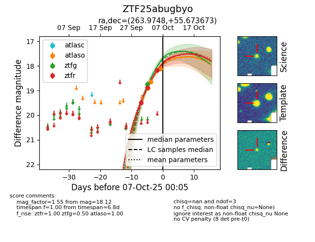
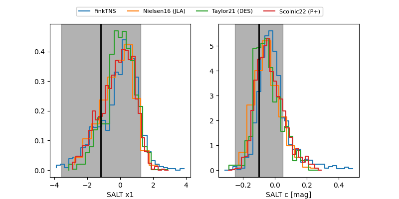

FINK: ZTF25abugbyo
Lasair: ZTF25abugbyo
ALeRCE: ZTF25abugbyo
ZTF25abugbyo (ztf,fink)
equatorial (ra, dec) = (263.9748,+55.67367)
galactic (l, b) = (83.6272,+32.61601)


last atlaso=18.12, ztfg=18.75, ztfr=18.17
4 atlaso, 1 ztfg, 3 ztfr detections